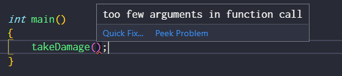

ISE102 Week 5: More about functions
Functions are the main workhorse of your programs. You'll make objects to hold functions, an you'll create variables for functions to act on them. Functions are the do in programming.
Code in the notes is duplicated here: week5_code.html
First, easier visual studio
We'll make a template project that already has the linker-system-console preference set and contains a basic Main.cpp
Default arguments
Parameters, or arguments, are the info you give to a function to do its work. Here's some psuedocode to remind us what a function passing an argument is all about.
Hey guy, put my drink in the fridge (this can of coke)
// Guy puts the coke in the fridge
This function obviously needs a parameter whenever you call it, of type drink!
Hey guy, put my drink in the fridge ()
// Guy: ERROR Your imaginary drink?
Here's our fail in code:
#include <iostream> // This function has an argument, degrees, of type int. void turnRight( int degrees ) { return; } int main() { turnRight(); // calling with no argument.. }

IDE error

He's not angry, just disappointed
Solution 1: Pass an argument
Obviously. Just never forget to pass an argument. But if it's a public function, there's a risk people will fail to pass an argument.
Solution 2: Default values for arguments!
Turns out you can define a default value for an argument. The function doesn't cause an error, you can compile.
It won't always make sense. If you tell your mate to put your drink in the fridge and just hold out your empty hand.. he won't just put a random drink in the fridge. Some functions don't have sensible defaults.
On the other hand if you ask a character to turn right, 90 degrees might be totally reasonable as a default.
#include <iostream> // This function has an argument, degrees, of type int. using namespace std; int _rotation = 0; void turnRight( int degrees = 90 ) { _rotation -= degrees; return; } int main() { cout << "Rotation: " << _rotation << endl; turnRight(45); // calling with no argument.. cout << "Rotation: " << _rotation << endl; turnRight(); cout << "Rotation: " << _rotation << endl; return 0; } /* Output: Rotation: 0 Rotation: -45 Rotation: -135 */

Now you have his attention
Defaults for multiple arguments
Some funcs have multiple args, and a couple will be rarey changed. It's good to be able to default those ones that aren't often used.
From the textbook:
// setting up a displaywidth and height // colourdepth and fullscreen become optional // with default values void setDisplay(int height, int width, int depth = 32, bool fullScreen = true);
Once you start supplying defaults, you can't stop:
void setDisplay(int width, int height, int depth = 32, bool fullScreen); // compile error, the final argument is missing a default.
The same goes for passing arguments. you can't leave out bit depth and leave in depth but then supply a value for fullscreen. the compiler would know what you mean here because there are different types. If they were both bools or ints it would have no idea which one you mean.
eg
Function Overloading
Sometimes you might want the same function to do a very similar thing but with different argument types.
If you want to use an equip function for things of type Armour and things of type Weapon, you might think you need to come up with two function names:
void equipWeapon(Weapon someWeapon) {} void equipArmour(Armour someArmour) {}
But C++ lets you use the same function name with a different argument list, and just picks the right one depending on what you pass in.
void equip(Weapon someWeapon) { } void equip(Armour someArmour) {}
A more basic example might be you want to convert lots of types to strings. Say an int, a float, a double, a Boolean String. Instead of
intToString(int), floatToString(float) etc you can use
String toString(int toConvert) { String converted = // some int conversion return(converted) } String toString(float toConvert) { String converted = // some float conversion return(converted) }
You end up with the same amount of functions, but you don't have a lot of different names to say the same thing. There are arguments over whether this is good or bad practise, and not all languages support it.
Passing values and vectors versus arrays
Normally parameters are passed as a copy. You can mess with them in your function and cause no issues:
void printMyHeight(int someonesHeight) { someonesHeight = 2; cout << "SHE'S ONLY " << someonesHeight << " FEET TALL!\n\n"; } int main() { cout << "How tall are you?\n\n"; int height = 6; printMyHeight(height); cout << "Thanks. I'm actually " << height << " feet tall.\n\n"; }
Let's jump to week5_code.html for the other two examples.
To Do
- Your assignment should be basically done and bug free this week, you only want to be cleaning up bugs and adding extra features/polish next week.
- Complete all Sololearn modules up to and including functions. (It's weird you have to do pointers before functions, but push through)
- Book chapter?
Resources
- Termcolor: termcolor.h